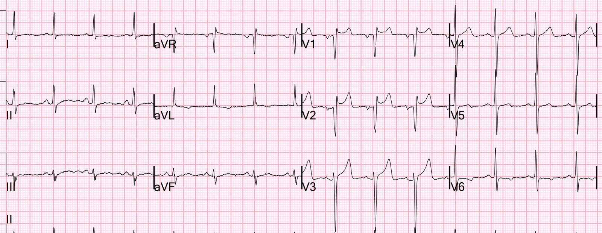
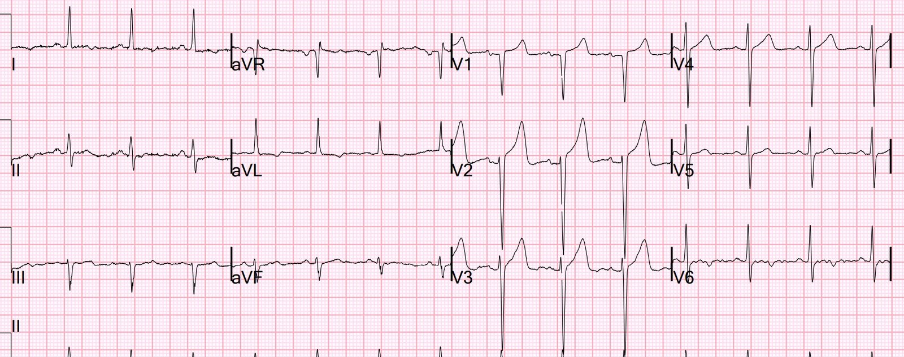
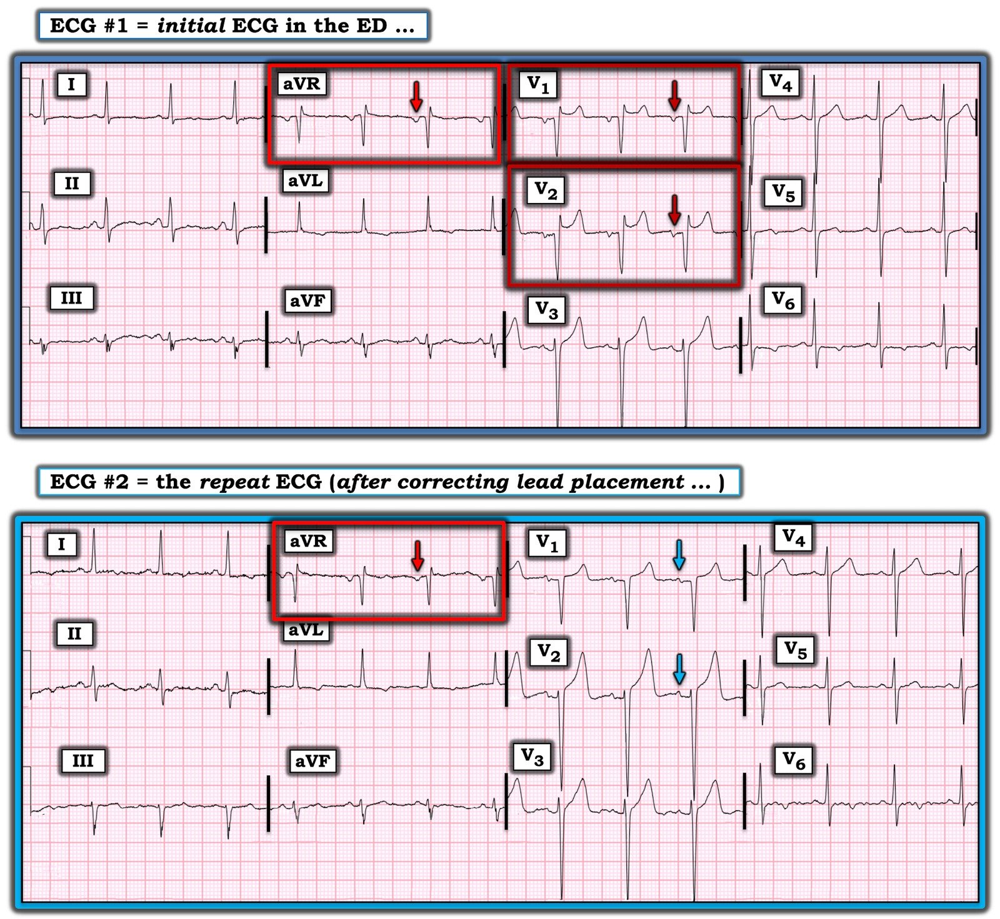
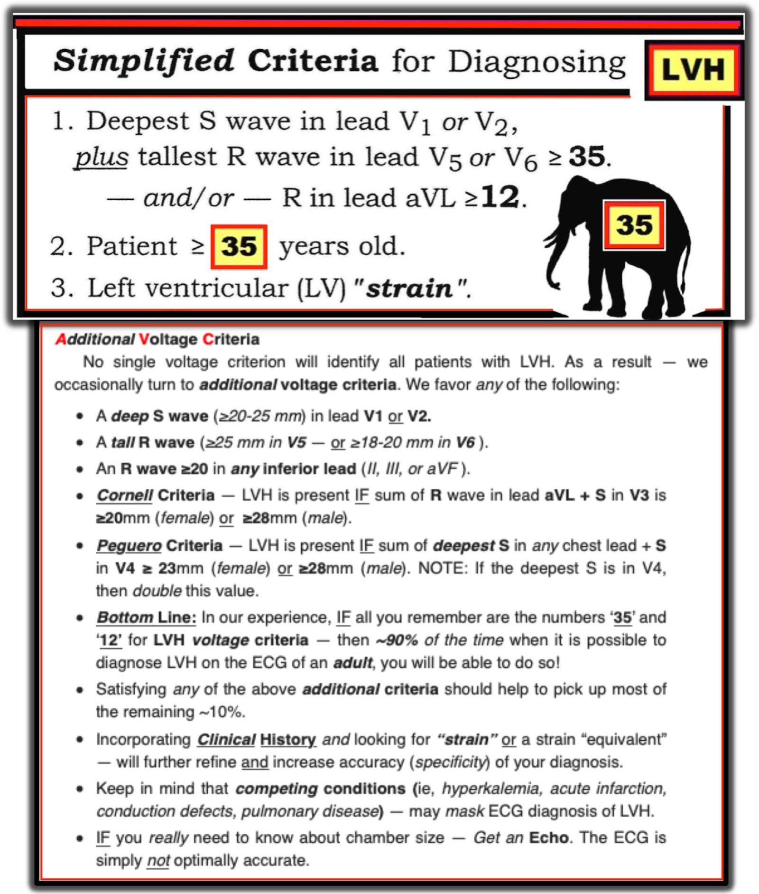

17/04/2022 — ST chênh lên này là gì?
Bản dịch tiếng Việt của bài "What is this ST Elevation?" – Dr. Smith’s ECG Blog. Giữ nguyên toàn bộ 6 hình ảnh của bản gốc.
Bệnh nhân này được chuyển đến khoa cấp cứu (ED) vì kali máu 6.1 mEq/L và có suy thận cấp ở một mức độ nào đó.
Bệnh nhân được ghi điện tâm đồ:


Bản ghi này được mang đến cho tôi để phân tích.
Máy tính đọc là “Nhồi máu cơ tim vùng vách”
Bạn nghĩ gì?
Có ST chênh lên hình yên ngựa (saddleback) và sóng Q ở chuyển đạo V1 và V2.
Bất cứ khi nào tôi thấy hình yên ngựa, hoặc sóng Q ở V1, V2, tôi đều xem liệu các điện cực có bị đặt quá cao hay không.
Làm sao tôi biết được? Bằng cách nhìn sóng P ở chuyển đạo V2, sóng này lẽ ra luôn phải dương. Hơn nữa, sóng P ở chuyển đạo V1 hầu như luôn phải hai pha lên-xuống. Trên điện tâm đồ này, sóng P đảo ngược hoàn toàn ở cả hai chuyển đạo. Điều này thường gặp và là do điện cực V1 và V2 bị đặt quá cao.
Điện cực V1 và V2 phải được đặt ở khoang liên sườn 4. Điện cực V4-V6 phải ở khoang liên sườn 5.
Hơn nữa, ST chênh lên (STE) hình yên ngựa ở V2 hiếm khi do OMI cấp của LAD.
Từ trước tới nay tôi mới chỉ gặp 2 ca như vậy. Một ca cực kỳ kín đáo.
Cả hai ca đều ở đây: https://drsmithsecgblog.com/search/label/Saddleback%20STEMI (nhãn bài: STEMI hình yên ngựa)
Tôi nói rằng ở đây không có gì đáng lo. Nhưng hãy ghi một bản khác với các điện cực được đặt đúng vị trí.
Đây là bản ghi đó:


Sóng P hai pha ở V1 và dương ở V2. Hình yên ngựa đã biến mất. Mức ST chênh lên là điển hình so với độ sâu của sóng S. Nhiều khả năng có LVH.

===================================
BÌNH LUẬN CỦA TÔI, bởi KEN GRAUER, MD (17/4/2022):
===================================
Tôi thấy ca hôm nay thú vị vì có sự tương tác giữa: i) Các tác động tiềm tàng trên điện tâm đồ của tăng kali máu (tức là bệnh nhân được chuyển đến khoa cấp cứu để đánh giá vì kali huyết thanh tăng K+ = 6.1 mEq/L); ii) Một hình ảnh giả nhồi máu (pseudo-infarct pattern) với sóng Q lớn vùng trước vách và ST chênh lên dạng “yên ngựa“ (saddleback) giống hình ảnh Brugada típ 2; iii) Đặt sai vị trí điện cực chuyển đạo V1 và V2; và, iv) LVH (phì đại thất trái – Left Ventricular Hypertrophy).
Tôi tập trung bình luận vào 4 yếu tố tương tác này. Đồng ý với Dr. Smith — không có dấu hiệu nào trên điện tâm đồ ban đầu của ca hôm nay đáng lo ngại về tắc mạch vành cấp.
- Để cho rõ — tôi đã ghép và đánh nhãn 2 điện tâm đồ của ca hôm nay (Hình 1).


==========================
3 Manh mối để Nhận ra Nhanh Việc đặt sai V1, V2:
Như Dr. Smith đã nhấn mạnh — chỉ cần nhìn qua điện tâm đồ #1 là phải nghĩ ngay đến việc điện cực V1 và V2 bị đặt quá cao trên ngực. Như trong Bình luận của tôi ở cuối trang của bài ngày 4 tháng Mười Một năm 2018 trên Blog của Dr. Smith — tôi ưa dùng 3 Manh mối. Tóm lại — hãy nghi ngờ chuyển đạo V1 và/hoặc V2 đã bị đặt quá cao trên ngực 1 hoặc 2 khoang liên sườn NẾU có một hoặc nhiều manh mối sau đây:
- MANH MỐI #1 — Nếu có r’ ở chuyển đạo V1 và/hoặc V2, nhất là khi không có dấu hiệu còn lại của blốc nhánh phải không hoàn toàn (tức là sóng s tận ở các chuyển đạo bên I và V6).
- MANH MỐI #2 — Nếu sóng P ở chuyển đạo V1 và/hoặc V2 có thành phần âm đáng kể.
- MANH MỐI #3 — Nếu hình dạng phức bộ QRS và sóng ST-T ở chuyển đạo V1 và V2 trông rất giống QRS và sóng ST-T ở chuyển đạo aVR.
Cả 3 manh mối này đều được gợi ý ít nhất một phần trên điện tâm đồ #1 (trong các hình chữ nhật ĐỎ ở bản ghi PHÍA TRÊN của Hình 1).
- Có sóng lệch tận r’ (sóng lệch dương ở phần tận cùng) ở cả hai chuyển đạo V1 và V2.
- Cả hai chuyển đạo V1 và V2 đều có sóng P (mũi tên ĐỎ ở các chuyển đạo này) với thành phần âm đáng kể.
- Dù ST dẹt ở chuyển đạo aVR khác với hình dạng sóng ST-T ở chuyển đạo V1 và V2 — hình thái QRS đặc trưng (dạng Qr’) gần như giống hệt nhau ở cả 3 chuyển đạo trong các hình chữ nhật ĐỎ.
Những Lưu ý thận trọng về 3 Manh mối:
Dù 3 Manh mối nêu trên hữu ích đến đâu trong việc nhanh chóng nghi ngờ chuyển đạo V1 và/hoặc V2 bị đặt quá cao — các manh mối này không phải không bao giờ sai. Có những lúc dù nhìn điện tâm đồ ta nghi điện cực V1 và V2 bị đặt quá cao — cuối cùng hóa ra lại không phải vậy. Hãy xem xét những điểm sau:
- Bình thường sóng P ở chuyển đạo V1 và/hoặc V2 có thể có thành phần âm — nhất là khi kích thước và/hoặc áp lực nhĩ tăng (tức là một trong các tiêu chuẩn điện tâm đồ của bất thường nhĩ trái là sóng P ở chuyển đạo V1 có thành phần âm sâu). Dù vậy, phần lớn trường hợp — độ sâu và độ rộng của thành phần âm “bình thường” của sóng P ở chuyển đạo V1 và/hoặc V2 sẽ không nổi bật đến mức như ở chuyển đạo V1 và V2 của điện tâm đồ #1.
- Về mặt sinh lý — sự hiện diện của sóng lệch r’ tận có nghĩa là thành phần cuối cùng của quá trình khử cực thất (nhìn từ chuyển đạo V1 và V2) hướng sang phải (tức là về phía đường ra thất phải). r’ ở chuyển đạo V1 (và thậm chí blốc nhánh phải không hoàn toàn) không nhất thiết là dấu hiệu bất thường ở một tỷ lệ nhỏ nhưng đáng kể người trưởng thành trẻ, khỏe mạnh — vì khử cực thất ở phần này của thất phải đôi khi hơi chậm hơn so với khử cực thất trái như một hiện tượng bình thường. Dù vậy, thấy r’ tận ở chuyển đạo V2 của một người trưởng thành khỏe mạnh thì ít gặp hơn nhiều — dù vẫn có thể xảy ra.
- Khác biệt về thể trạng và giải phẫu thành ngực đôi khi cũng có thể giải thích những dấu hiệu điện tâm đồ bất ngờ — và trong ca hôm nay, tăng kali máu là một yếu tố gây nhiễu tiềm tàng khác.
- ĐIỀU CỐT LÕI — Như Dr. Smith đã nói, kiểm chứng nghi ngờ rằng chuyển đạo V1 và/hoặc V2 có thể bị đặt quá cao trên ngực là việc DỄ DÀNG: chỉ cần tự mình kiểm tra vị trí điện cực khi CHÍNH BẠN ghi lại điện tâm đồ! Như thấy rõ trên điện tâm đồ #2 ở Hình 1 — điện tâm đồ ghi lại cho thấy: i) Mất thành phần âm của sóng P ở chuyển đạo V1 và V2 (mũi tên XANH ở các chuyển đạo này); ii) Mất r’ tận ở chuyển đạo V1 và V2; iii) Mất sóng Q ở chuyển đạo V2; và, iv) mất mọi sự giống nhau giữa hình dạng điện tâm đồ ở chuyển đạo V1, V2 với chuyển đạo aVR. Điều này xác nhận chuyển đạo V1 và V2 đã bị đặt quá cao trên ngực ở điện tâm đồ #1!
==========================
“Hình yên ngựa” ở Hình 1 Không phải là hình ảnh Brugada típ 2:
Dù đã thấy hình ảnh điện tâm đồ Brugada típ 1 và típ 2 bao nhiêu lần — tôi vẫn thấy mình phải tra lại các hình ở Hình 2, mà tôi lấy lại từ Bình luận của tôi ở cuối trang của bài ngày 5 tháng Chín năm 2020 trên Blog của Dr. Smith.

Hình 2: Ôn tập các hình ảnh điện tâm đồ trong hội chứng Brugada (phỏng theo bài báo của Brugada và cs. đã dẫn ở trên, đăng trên JACC: Tập 72; Số 9; 2018) — (A) Hình ảnh điện tâm đồ Brugada típ 1, cho thấy ST chênh lên dạng vòm (coving) ≥2 mm ở ≥1 chuyển đạo trước tim bên phải, theo sau là sóng T âm. (B) Hình ảnh điện tâm đồ Brugada típ 2 (hình ảnh “yên ngựa” (saddle-back)) — cho thấy ST chênh lên dạng lõm (concave-up) ≥0.5 mm (thường ≥2 mm) ở ≥1 chuyển đạo trước tim bên phải, theo sau là sóng T dương. (C) Các tiêu chuẩn bổ sung để chẩn đoán hình ảnh điện tâm đồ Brugada típ 2 (TRÊN: tiêu chí góc β; DƯỚI: có hình ảnh Brugada típ 2 nếu tại vị trí 5 mm phía dưới điểm cao nhất của r’ — đáy của tam giác tạo thành ≥4).
Về ca hôm nay — khi lần đầu nhìn hình dạng sóng ST-T ở chuyển đạo V1 và V2 trên điện tâm đồ #1 — tôi đã cân nhắc rằng đây có thể là hình ảnh điện tâm đồ Brugada típ 2. Dù hình thái ST chênh lên dốc lên dạng “yên ngựa” này tự nó không đủ để chẩn đoán hội chứng Brugada — nó vẫn gợi ra khả năng này.
- Dù vậy — không có hình ảnh Brugada típ 2 ở chuyển đạo V1 và V2 của điện tâm đồ #1. Lưu ý ở Ô C của Hình 2 minh họa góc β rộng là một thành phần then chốt để chẩn đoán hình ảnh Brugada típ 2. Hãy so sánh với góc β cực kỳ hẹp của các sóng lệch r’ ở cả V1 và V2 trên Hình 1.
- Như đã nói ở trên — sóng lệch r’ tận ở chuyển đạo V1 là một biến thể bình thường cực kỳ thường gặp ở người trưởng thành trẻ, khỏe mạnh. Trong ca hôm nay — các sóng lệch r’ tận ở chuyển đạo V1 và V2 của điện tâm đồ #1 không những không phải là hình ảnh Brugada típ 2 — mà các sóng lệch r’ tận này còn biến mất khi điện tâm đồ được ghi lại với điện cực đặt đúng vị trí!
==========================
Sóng T nhọn ở các chuyển đạo trước (Tăng kali máu và/hoặc LVH)?
Còn lại là cần giải thích sóng T nhọn ở các chuyển đạo trước thấy trên cả hai điện tâm đồ ở Hình 1. Tôi hoàn toàn đồng ý với Dr. Smith rằng không có gì gợi ý tắc mạch vành cấp trên các điện tâm đồ hôm nay. Nhưng tôi thấy điều quan trọng là: i) Nhận biết mọi yếu tố có thể tương tác với nhau trong ca hôm nay; và, ii) Hiểu rằng chúng ta sẽ không biết sóng ST-T “thật sự” của bệnh nhân hôm nay trông như thế nào cho đến khi kali huyết thanh được điều chỉnh từ giá trị tăng 6.1 mEq/L ghi nhận lúc đến khoa cấp cứu.
- “Tin tốt” — là điện tâm đồ ghi lại sau khi sửa vị trí điện cực đã loại bỏ sóng Q lớn từng thấy ở chuyển đạo V2 của điện tâm đồ #1. Nhưng sóng T cao, nhọn vẫn tồn tại ở các chuyển đạo trước của điện tâm đồ #2.
- LVH là một yếu tố tương tác. Tôi đã nhiều lần điểm lại cách tiếp cận mà tôi ưa dùng để chẩn đoán LVH (xem Bình luận của tôi trong bài ngày 20 tháng Sáu năm 2020 trên Blog của Dr. Smith, cùng các bài khác — và xem Hình 3 về các tiêu chuẩn cụ thể tôi sử dụng) trên điện tâm đồ. Dù không biết tuổi và giới của bệnh nhân hôm nay — biên độ sóng S rất lớn ở chuyển đạo V2, V3, V4 trên điện tâm đồ #2 gợi ý mạnh LVH có khả năng theo tiêu chuẩn Cornell và/hoặc Peguero.
- Như tôi đã nhấn mạnh trong Bình luận ngày 20 tháng Sáu — khi có sóng S rất sâu ở các chuyển đạo trước — “tăng gánh” thất trái đôi khi biểu hiện ở các chuyển đạo trước dưới dạng ST chênh lên kèm sóng T nhọn (tức là “hình soi gương” của ST chênh xuống do “tăng gánh” ở các chuyển đạo bên). Điều này có thể giải thích hình ảnh sóng ST-T mà ta thấy ở chuyển đạo V1 đến V3 của điện tâm đồ #2.
- Tăng kali máu là một yếu tố tương tác khác. Kali huyết thanh tăng 6.1 mEq/L ở bệnh nhân suy thận cấp chắc chắn là giá trị đủ cao để gây sóng T nhọn ở các chuyển đạo trước (có lẽ chồng lên các sóng T vốn đã nhọn ở chuyển đạo trước do “hình soi gương” của “tăng gánh” thất trái).
- Vậy TẠI SAO không thấy sóng T nhọn ở nhiều chuyển đạo hơn trên điện tâm đồ #2? Một câu trả lời khả dĩ là lý do sóng ST-T “dẹt” như vậy ở mọi chuyển đạo bên trên điện tâm đồ #2 — là vì ST chênh xuống sẵn có do “tăng gánh” thất trái đã làm giảm bớt sóng T nhọn do tăng kali máu chồng lên.
- ĐIỀU CỐT LÕI: Tôi hoàn toàn đồng ý rằng các điện tâm đồ của ca hôm nay không cho thấy dấu hiệu tắc mạch vành cấp. Nhưng có nhiều yếu tố tương tác có thể chồng lên hoặc làm giảm bớt tác động của nhau trên điện tâm đồ. Tôi nghĩ điều quan trọng là hiểu rằng chúng ta sẽ không biết sóng ST-T “thật sự” của bệnh nhân hôm nay trông như thế nào cho đến khi điện tâm đồ được ghi lại sau khi kali huyết thanh đã được điều chỉnh.

